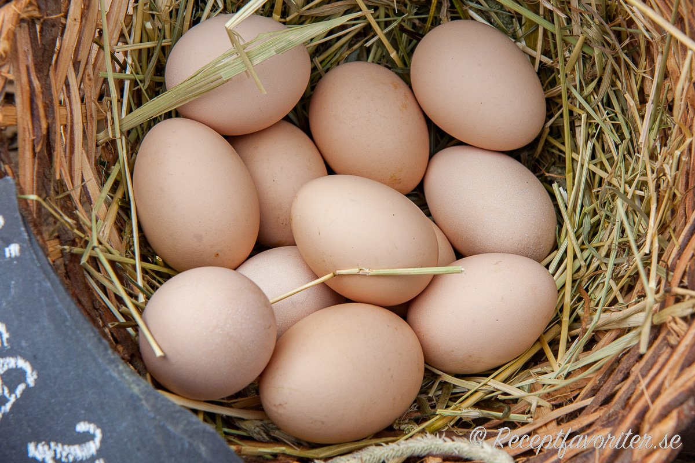
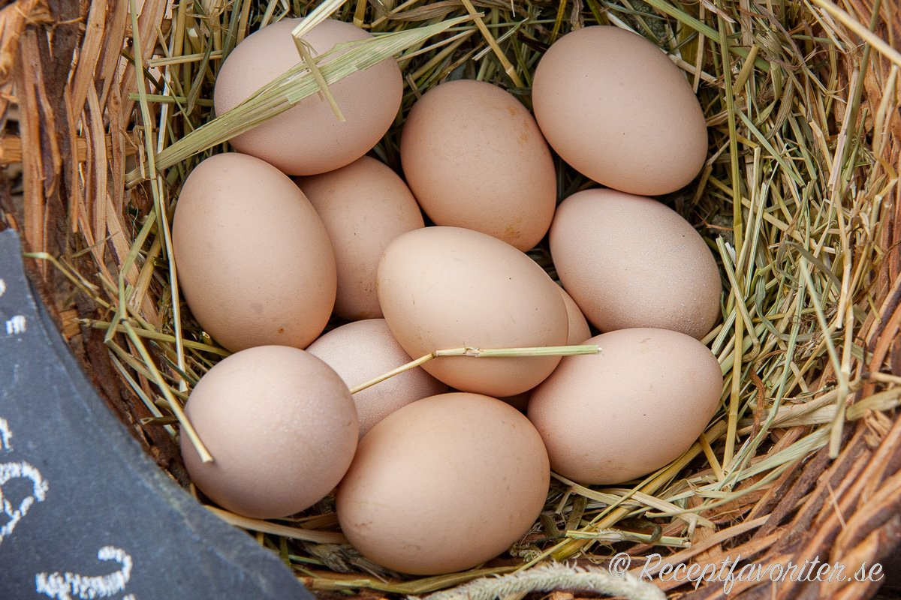
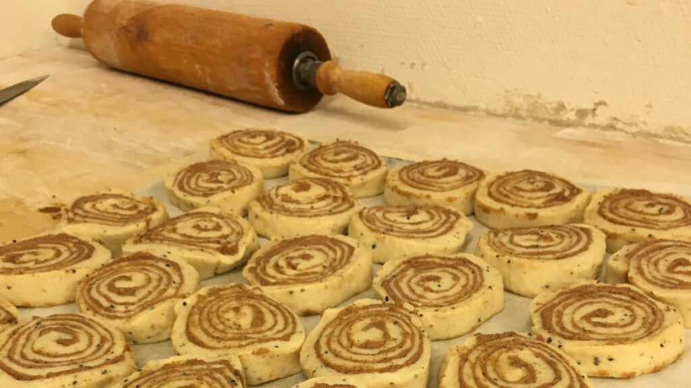
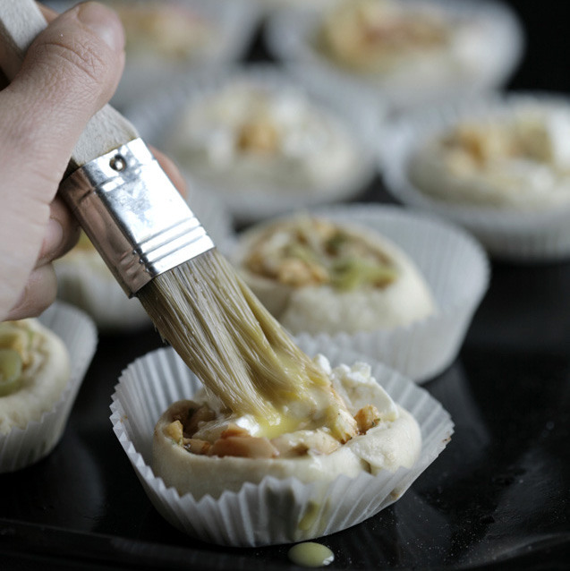
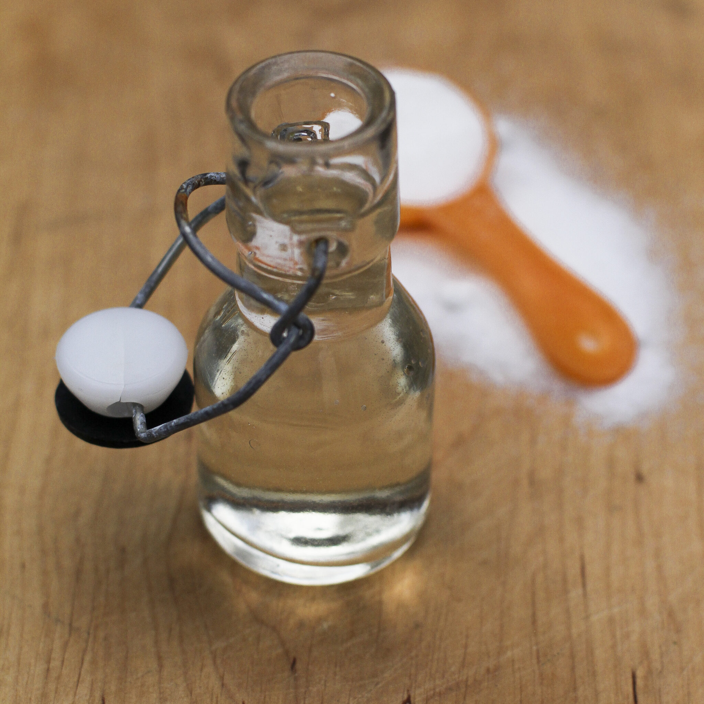

Ingredienser
Kanelfyllning
- 150 g smör, rumsvarmt
- 1 dl farinsocker
- 1 dl strösocker
- 5 tsk malen kanel
- 2 tsk majsstärkelse
- 1 msk vatten
Vetedeg
- 50 g jäst, rumstempererad
- 500 g mjölk, rumstempererad [5 dl]
- 1 msk malen kanel
- 250 g smör
- 200 g strösocker [2 dl]
- 1 kg vetemjöl [16,5 dl]
- 1 tsk salt
Pensling
- 1 ägg
- ca 1 krm salt
- vatten
- pärlsocker (till garnering)
Sockerlag
- 2 dl vatten
- 1 dl strösocker

 

Recept

Blanda ihop alla ingredienser till kanelfyllningen till en jämn och bredbar smet.

- 1. Smula jästen i en bunke och tillsätt mjölken. Blanda tills jästen lösts upp helt i mjölken.
- 2. Ha sedan i kanel, smör i delad i bitar, strösocker och hälften av vetemjölet. Arbeta ihop till en kladdig deg och tillsätt därefter saltet och mer mjöl efter behov.
- 3. Knåda ordentligt i minst 10 minuter med maskin på låg hastighet och lite längre om du kör för hand.
- 4. Kavla ut degen till en stor rektangel med måtten 30×40 cm.
- 5. Bre ut fyllningen över hela rektangeln och vik de sedan på mitten längs med långsidan. Kavla lite lätt så att du får en jämn rektangel utan luftbubblor.
- 6. Skär 1 cm tunna remsor längs med kortsidan av den vikta rektangeln.
- 7. Ta en remsa och vira runt fingrarna. Avsluta med att vika in kanten av remsan under bullen. Spela gärna klippet (se tips nedan) för att se hur man snurrar bullarna.
- 8. Lägg bullarna på plåtar med bakplåtspapper, med generöst med mellanrum och täck med en bakduk och låt jäsa i 2-3 timmar beroende på temperaturen i ditt kök. Du vet att de är färdigjästa om degen “studsar tillbaka” när du trycker lite lätt med fingret.
- 9.Sätt ugnen på 200 grader (över- och undervärme).

Vispa lätt ihop ägg, salt och lite vatten till penslingen och pensla dina bullar. Garnera med pärlsocker. Grädda dem sedan i mitten av ugnen i ca 15 minuter eller tills de fått fin färg.

Under tiden kan du förbereda sockerlagen genom att enkelt blanda ihop vatten och strösocker. Blanda tills sockret lösts upp i vattnet. Pensla sedan dina bullar med sockerlagen så fort de kommit ur ugnen.